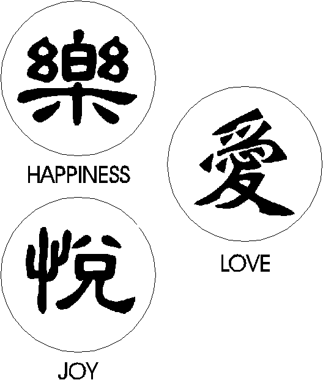
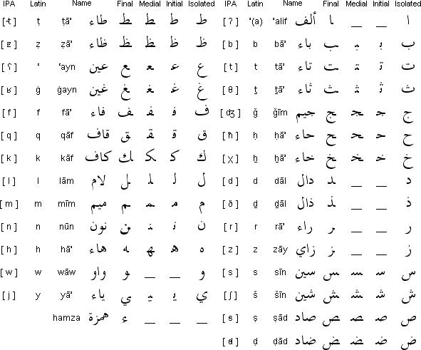
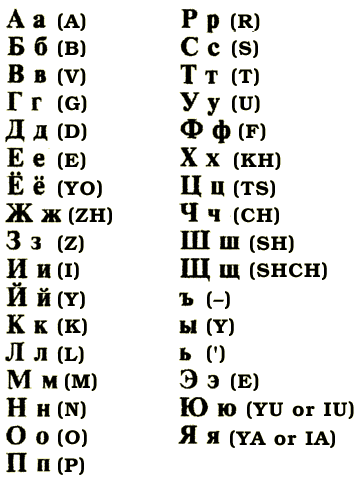

Presentation Title
Author
🤷
Language in the World
Ling Link
- Spend then next 2 minutes looking through the text-based technology you use the most (can’t just be pics/videos), and answer these questions:
- Do you use emojis? Do you ever post/respond with emojis only (no other text)?
- Which emojis do you use the most often? Why?
- Do you think your emoji use depends on certain factors like who you are talking to, etc.? Which ones are important?
- Have you ever had confusion/trouble because of misunderstanding what an emoji meant?
- Have you ever sent an emoji that was embarrassing?
- Do you think your use of emojis has changed over time?
Recall
- Language acquisition is the process by which humans acquire the ability to use, produce, and perceive language!
- We acquire speech/sign
- We must learn writing
- Pros and cons of the three modes of communication: speech, sign, writing
- Writing is the representation of language with the use of visual signs
- So, not pictograms
- Iconic vs. symbolic
- Phonological or morphological
Logographic Scripts

- Chinese
- These logograms represent the words ‘happiness’, ‘love’ and ‘joy’
- Not the phonographic equivalents of said words in Chinese
Logographic signs in English?
- Nope!
- No “pure” logographic scripts, as each logographic system has at least some phonological signs
- Why not?
- For a writing system to adequately represent a language, it must be able to represent words that are newly introduced in the language, like:
- names
- foreign words
- new words created with derivational morphemes, etc.
- For a writing system to adequately represent a language, it must be able to represent words that are newly introduced in the language, like:
Any “purely” logographic scripts?
Phonographic Writing Systems
- There are a number of different ways that phonographic writing systems may represent the phonology , or sound system, of a language
- Traditionally divided into:
- Syllabic
- Graphemes represent syllables (completely or incompletely)
- Segmental
- Graphemes represent phonemes (completely or incompletely)
Syllabic Scripts
- Syllabic scripts = Syllabaries (=signs stand for syllables, not individual phonemes)
- Many of the world’s languages that utilize syllabaries have very restrictive syllable structure
- Syllables look like CV(C) = consonant + vowel (+ consonant) = Japanese
- <If> <Eng>
<had> <a> <la> <we> <would> <write> <like> <this> - English allows very complex syllables, like the word “sixths” [sɪksθs] (many multi-consonant combos in onset and offset position)
Interactive
- Which one of these says “sushi”?
- Give others, but the right one is すし
- Others: さの; ても; さけ
- Use this image too
Segmental systems

- Graphemes represent discrete phonological segments (phonemes)
- Alphabets
- Abjads
- Difference? Abjads only represent consonant sounds, not vowels
- Vowels are predictable

Media
Q slide
True or false: People used to write a lot more before we had phones and texting. False
Writing today
- Since writing is learned, we are often taught a very specific way in which to represent language on the page
- Big focus on standards
- Punctuation, capitalization, spacing exists in writing, not speech
- Ums and uhs are common in speech, rare in writing
- But writing in today’s world looks a bit different
- Digital writing has exploded!
- = very fast linguistic change!
- Is it more like speech?
- Still a visual modality
- But you can modulate in ways that were previously not done in writing!
Texting
Characteristics of CMC
Q slide
What is the most common thing you do in your texts that is specific to texting? It can be an abbreviation you use all the time or some way of marking irony, sarcasm, excitement, etc. Keep it clean!
What it means
- The language of texting often boils down to efficiency and meaning-making
- Efficiency = abbreviations (lol, brb), letters/numbers for whole words (b for “be”, 4 for “for”), lack of punctuation
- Meaning-making = ALL CAPS (for shouting), extra letters (like looooooong meaning “really long” or yayyyyyyyy! meaning very excited), representations of emotional sounds (haha, <sobbing>)
- Others?
- Like speech, much of what you do online seems to be acquired (no one taught you what these things mean) = epic fails for Mom!
Media
Emojis
- One could argue that modern emojis are pictograms
- Much like the images here, which are the kinds of signs one might see at an airport, many emoji = drawing of a word like ☕
- Not logographic, not phonographic
- But perhaps they are more extralinguistic in nature
- Often to fill the emotional gap of writing; missing facial expression? 😊
- Or to modulate/modify the message (like fairy messages? “stop posting negative comments ✨⭐ i can’t stop liking them”)
Linguistically speaking…
- Emojis are more common:
- In positive posts
- When trying to set the right emotional tone
- In scenarios requiring clarification
- Sociolinguists have found interesting variation:
- Women use emojis more than men
- Men use a wider range of emojis
- There are differences in usage between cultures, regions
- Still probably not a separate language though
- But not ruining language either!
What’s next?
- Come Wednesday for Why can’t Siri pronounce my name?
- Quiz 9 in recitation on Friday
- Observation notes #6 (last one!) due Friday, April 12 at 11:59pm
- No late work, no AI
- Drop lowest – if you are happy, you can skip it!

Organization